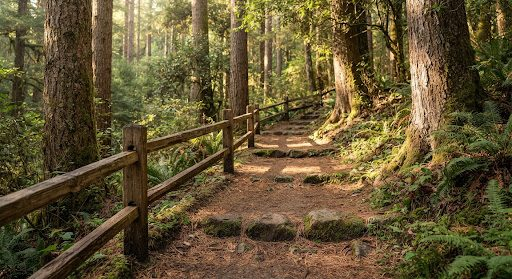
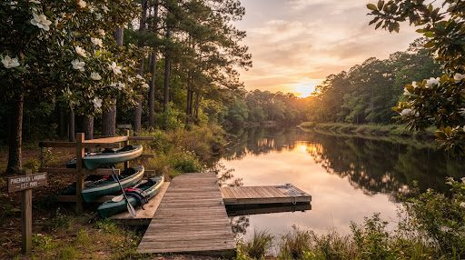
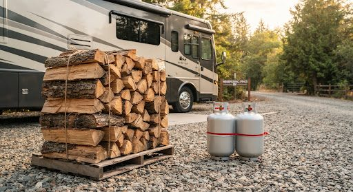
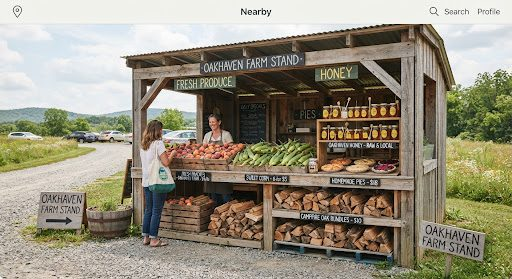
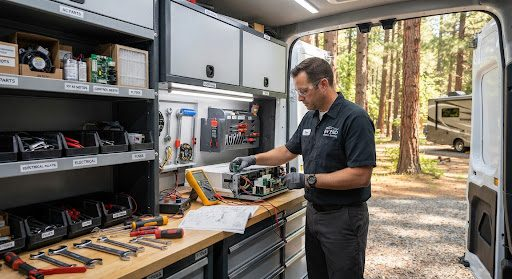

Places, hours, and photos are sample data for this demo.

0.4 mi away
Trails
Pinecrest Nature Loop
Gentle 2.2-mile pine-needle loop from the North Meadow, shaded, with three creek lookout decks and bird markers.
scheduleOpen until sunset
location_on2601 N University Parks Dr, Waco, TX
directions_car
3 min drive
•
schedule
About 60 min here

0.8 mi away
Eat
Magnolia General & Deli
The park-adjacent staple: hot deli sandwiches, fresh biscuits, ice, and every camp supply you forgot to pack.
scheduleOpen until 9:00 PM
location_on1 Magnolia Loop, Waco, TX
call(555) 892-1102
directions_car
4 min drive
•
schedule
About 30 min here
1.2 mi away
Shopping
Magnolia Farmers Market
Saturday-morning market with local makers, baked goods, fresh-cut flowers, and handmade gifts under the oaks.
scheduleSaturdays 8:00 AM - 1:00 PM
location_on400 Franklin Ave, Waco, TX
call(254) 555-0126
directions_car
5 min drive
•
schedule
About 45 min here

1.5 mi away
Water & Paddle Sports
Timber Creek Kayaks
Flatwater canoe and paddleboard launches along protected cypress creeks. Resort shuttle picks up at Gate B every hour.
scheduleOpen until 6:00 PM
location_on88 University Parks Dr, Waco, TX
call(254) 555-0137
directions_car
6 min drive
•
schedule
About 120 min here

1.9 mi away
Services
Blackwood Propane & Firewood
Propane refills by the gallon and kiln-dried firewood bundles, loaded into your truck for you.
scheduleOpen until 6:00 PM
location_on12 Bosque Blvd, Waco, TX
call(555) 620-9811
directions_car
6 min drive
•
schedule
About 15 min here

2.1 mi away
Provisions
Pine Valley Farm Stand
Fourth-generation family market: fresh produce, sourdough, wildflower honey, and kiln-dried camp firewood.
scheduleOpen until 7:00 PM
location_on212 Valley Mills Dr, Waco, TX
call(254) 555-0119
directions_car
7 min drive
•
schedule
About 30 min here
2.2 mi away
Services
Brazos Breeze Laundromat
Clean, attended laundromat with oversized washers for bedding and a folding service if you would rather be at the beach.
scheduleOpen until 10:00 PM
location_on305 La Salle Ave, Waco, TX
call(254) 555-0155
directions_car
7 min drive
•
schedule
About 60 min here
2.6 mi away
Eat
Riverside Bakery & Café
Small-batch bakery with strong coffee, cinnamon rolls the size of a plate, and fast Wi-Fi in the corner booths.
scheduleOpen until 3:00 PM
location_on9 Bagby Ave, Waco, TX
call(254) 555-0148
directions_car
8 min drive
•
schedule
About 45 min here

2.8 mi away
Services
Pine Valley RV Tech
Mobile RV repair that comes to your site: AC, plumbing, tires, and electrical. Same-day slots most days.
scheduleOpen until 6:00 PM
location_on540 Speegleville Rd, Waco, TX
call(555) 412-9983
directions_car
9 min drive
•
schedule
About 60 min here
3.1 mi away
Activities
Brazos Bike Rentals
Beach cruisers and e-bikes by the hour or day, delivered to the park gate. Helmets and locks included.
scheduleOpen until 7:00 PM
location_on17 S University Parks Dr, Waco, TX
call(254) 555-0173
directions_car
9 min drive
•
schedule
About 90 min here

3.4 mi away
Eat
Ridgeview Craft Brewery & Smokehouse
Craft beers and slow-smoked barbecue in an outdoor beer garden with string lights and live music on weekends.
scheduleOpen until 11:00 PM
location_on77 Waco Dr, Waco, TX
call(555) 331-9042
directions_car
10 min drive
•
schedule
About 90 min here
3.8 mi away
Beach & Outdoors
Lake Waco Beach & Pier
Sandy swim beach on Lake Waco with a fishing pier, lifeguards in season, and the best sunset view over the water.
scheduleOpen until 8:00 PM
location_on101 Lake Shore Dr, Waco, TX
call(254) 555-0164
directions_car
11 min drive
•
schedule
About 120 min here
4.2 mi away
Shopping
Bluewater Bait & Tackle
Live bait, rod rentals, fishing licenses, and straight answers on what is biting off the pier this week.
scheduleOpen until 8:00 PM
location_on230 Airport Rd, Waco, TX
call(254) 555-0191
directions_car
12 min drive
•
schedule
About 30 min here
6.0 mi away
Emergency
Oak Ridge Urgent & Vet
Combined urgent care and emergency veterinary hospital, open 24/7. Walk-ins welcome, no appointment needed.
scheduleOpen 24 hours
location_on900 Imperial Dr, Waco, TX
call(555) 091-1234
directions_car
14 min drive
•
schedule
About 45 min here